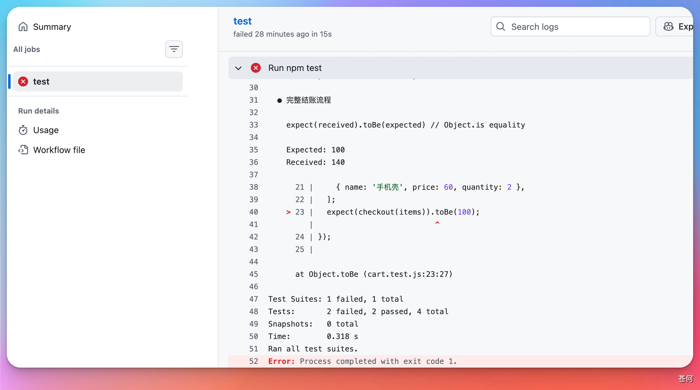
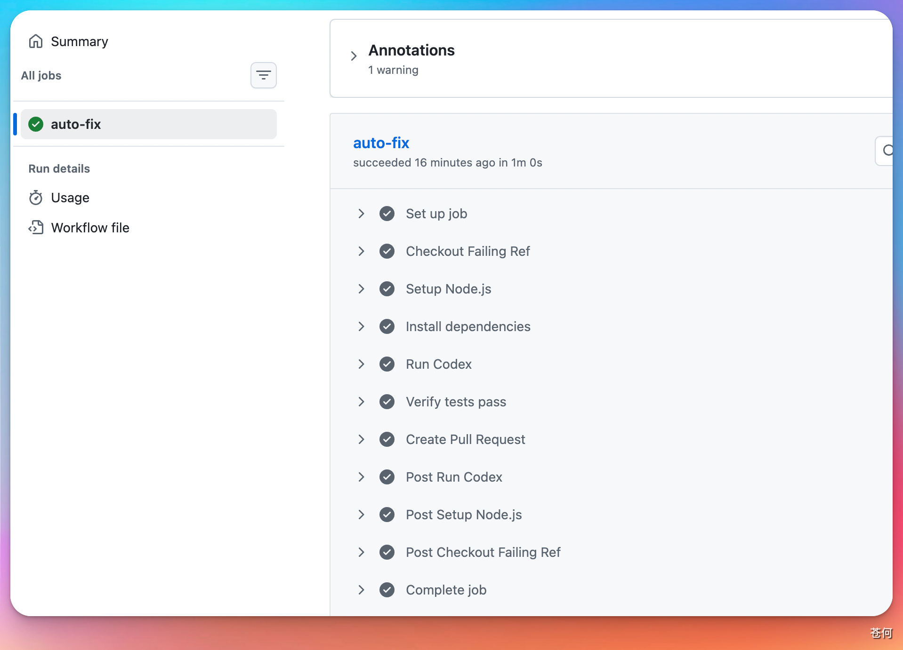
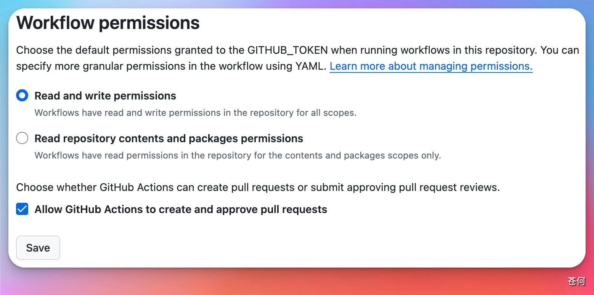
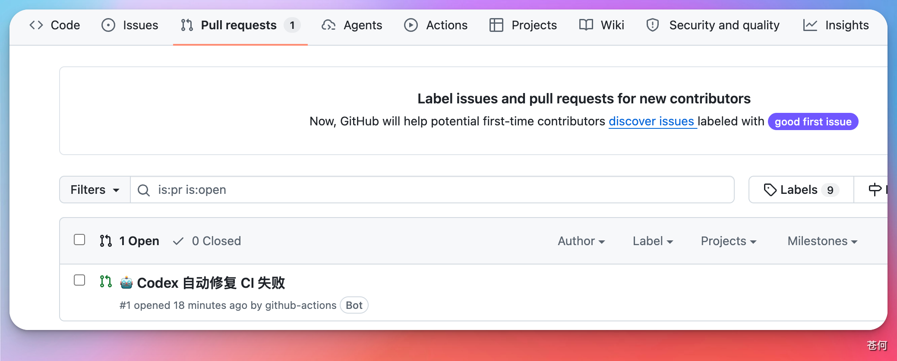
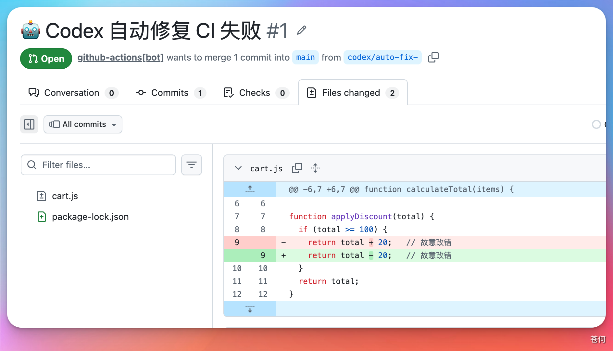

这篇文章记录了一次真实的实测：CI 一挂，Codex 自动读代码、找问题、改好、开 PR，等你合并，全程不需要人工介入。
演示用的是一个购物车项目。
传统方式是什么样的#
CI 失败是开发日常里很常见的事，但处理起来并不轻松。
通常的流程是这样的：收到邮件或消息通知 → 打开 CI 日志，逐行看报错 → 切换到本地，找到出问题的代码 → 修复、提交、再推一次 → 等 CI 重新跑，确认通过 → 开 PR，等人审查合并。
整个链路全靠人在中间串起来。如果报错信息不明确，还要加上一段排查时间。遇到下班时间或者跨时区协作，一个 CI 失败拖到第二天才处理也很正常。
引入 Codex 之后，这条链路发生了变化：CI 一失败，工作流自动触发 Codex，它自己读代码、定位问题、修好、开 PR。你需要做的，只是最后审一眼、点 Merge。
错误发生在哪里#
项目的核心逻辑是计算购物车总价，满 100 减 20。
折扣函数里埋了一个 bug：减号被写成了加号。
// 错误的代码
if (total >= 100) {
return total + 20; // 应该是减号
}效果是：原价 120 元的商品，打完折后变成 140 元，越打折越贵。
提交后 CI 报了什么错#
代码推到 GitHub 后，CI 自动跑测试，大约一分钟后失败。

点进去看报错：

测试期望拿到 100，实际拿到 140。错误直接指向了折扣计算的问题，非常明确。
配置文件长什么样#
让 Codex 自动介入的关键，是在仓库里放一个 GitHub Actions 工作流文件。完整配置如下：
name: Codex Auto-Fix on Failure
on:
workflow_run:
workflows: ["CI"]
types: [completed]
permissions:
contents: write
pull-requests: write
jobs:
auto-fix:
if: ${{ github.event.workflow_run.conclusion == 'failure' }}
runs-on: ubuntu-latest
env:
OPENAI_API_KEY: ${{ secrets.OPENAI_API_KEY }}
FAILED_WORKFLOW_NAME: ${{ github.event.workflow_run.name }}
FAILED_RUN_URL: ${{ github.event.workflow_run.html_url }}
FAILED_HEAD_BRANCH: ${{ github.event.workflow_run.head_branch }}
FAILED_HEAD_SHA: ${{ github.event.workflow_run.head_sha }}
steps:
- name: Checkout Failing Ref
uses: actions/checkout@v4
with:
ref: ${{ env.FAILED_HEAD_SHA }}
fetch-depth: 0
- name: Setup Node.js
uses: actions/setup-node@v4
with:
node-version: '20'
- name: Install dependencies
run: npm install
- name: Run Codex
uses: openai/codex-action@main
with:
openai-api-key: ${{ secrets.OPENAI_API_KEY }}
prompt: "这是一个 Node.js 项目，使用 Jest 做测试。请读取仓库代码，运行测试套件，找到导致测试失败的最小改动范围，修复它，然后停止。不要修改与失败无关的代码。"
sandbox: workspace-write
- name: Verify tests pass
run: npm test --silent
- name: Create Pull Request
if: success()
uses: peter-evans/create-pull-request@v6
with:
commit-message: "fix: Codex 自动修复失败的测试"
branch: codex/auto-fix-${{ github.event.workflow_run.run_id }}
base: ${{ env.FAILED_HEAD_BRANCH }}
title: "🤖 Codex 自动修复 CI 失败"
body: |
Codex 检测到 CI 失败，自动生成了这个修复 PR。
失败的工作流：${{ env.FAILED_WORKFLOW_NAME }}
失败记录链接：${{ env.FAILED_RUN_URL }}
请检查改动内容，确认无误后合并。几个值得注意的地方：
触发与过滤：监听名为 "CI" 的工作流，等它跑完再判断结果。conclusion == 'failure' 确保只在失败时才真正执行，成功的话这个 job 直接跳过，不消耗资源。
记录失败现场：把失败那次 run 的分支、提交 SHA、日志链接都存进环境变量。这些信息最终会写进 PR 描述，方便事后追溯是哪次 CI 触发了这个修复。
检出失败的代码：ref: ${{ env.FAILED_HEAD_SHA }} 拉取失败那次提交的代码，确保 Codex 改的是真正出问题的版本。
Codex 修复：使用官方的 openai/codex-action@main，prompt 用中文写清楚要求——跑测试、找最小改动范围、修完停手，不碰无关代码。sandbox: workspace-write 允许它写文件。
先验证再开 PR：Codex 改完后先跑一次 npm test，确认测试通过了才执行 create-pull-request。if: success() 保证改错了的话不会开出一个还是红的 PR。
告诉 Codex 去做什么#
CI 失败后，配置好的 Codex 工作流自动触发。它做了三件事：读取仓库代码、运行测试套件、定位问题并修改。

整个过程大约一分钟。
修复过程中遇到了什么问题#
实测踩了两个坑，记录在这里。
第一个坑：PR 权限没开
Codex 改好了代码，但开 PR 那步报错：
Error: GitHub Actions is not permitted to create or approve pull requests.GitHub 仓库默认不允许 Actions 创建 PR，需要在 Settings 里手动开启。

开启后重新触发，正常。
第二个坑：失败也计费
调试阶段反复触发了几次，最终账单是 $0.40。
API 按 token 计费，不按成功次数——只要 AI 启动并读了代码，费用就已经产生。正常情况下一次成功的修复大约 $0.05–$0.10，多花的是调试成本。
修复成功后的结果#
工作流跑完变绿，Pull Requests 页面出现一条自动生成的 PR。

点进去看它改了什么：

就改了这一个字符，其他代码一行没动。
点 Merge，完成。
小结#
这次实测验证了 Codex 通过 GitHub Actions 自动修复 CI 的能力是真实可用的——能准确定位问题、只改必要的代码、修完自动开 PR。
有两点值得提前了解：一是 GitHub 仓库的 PR 权限需要手动开启，否则最后一步会失败；二是 API 按用量计费，调试阶段的失败也会产生费用，建议在 OpenAI 后台设置一个月度消费上限。